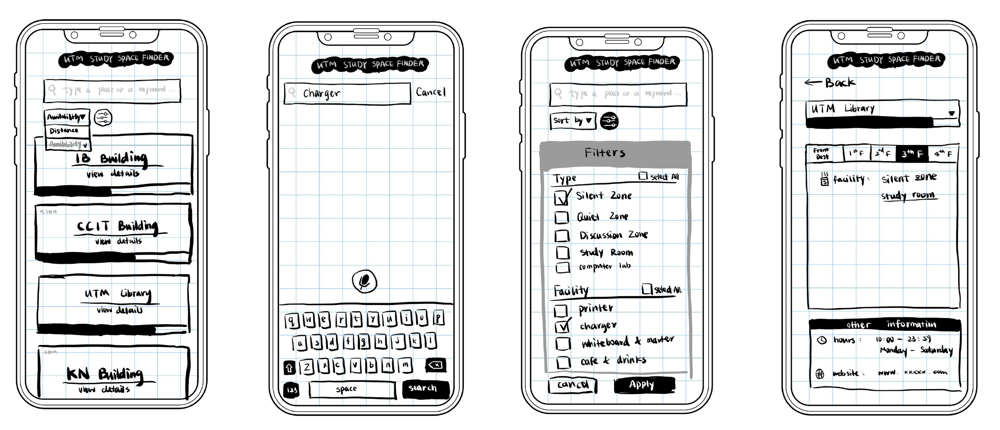

University of Toronto Mississauga (UTM) offers many spaces for students to study, along with several facilities to aid students' studies. However, the study spaces are often packed with students, as there are more students than study spaces in UTM. To make matters worse, there are no services that offer real-time updates of the capacity of study spaces - it is very difficult to find unoccupied spots in the UTM study spaces.
We wanted to gather quantitative and qualitative data about how UTM students feel about the availability of study spaces. We designed a questionnaire with 11 multiple-choice questions using Google Forms. The questionnaires were deliverable to students both through social media and through in-person encounters and ended up receiving 67 valid responses.
The above is a part of results from our questionnaire.
Conducting in-person interviews would provide us with a perspective and voice that would go beyond answering multiple choice questions. As a result, we conducted 2 interviews with 11 questions with UTM students.
Main Insights:Study Format: In-person
Evaluation Method: Cognitive walkthroughs
In the prototype of UTM Study Space Finder, you will find the following functions: